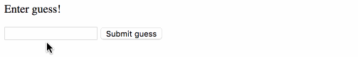
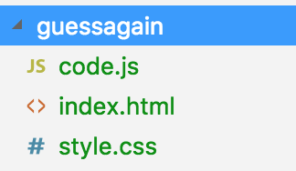

The DOM
JS and HTML:s bastard childSections in this chapter
Introducing the DOM
DOM DOM DOM!
Understanding what the DOM is
In a nutshell: the DOM is the bridge between JS and HTML:

Another way of putting it: the HTML is the recipe and the DOM is the dish.
The DOM is the browser's internal representation of the HTML.
We've already seen the DOM in the Elements tab in the dev tools, and noted it looks an awful lot like our HTML.
But that's just because we haven't involved JavaScript yet. JavaScript can manipulate the DOM. The DOM is not constant.
We interact with the DOM from JS space through the global document variable.
It has a gajillion methods for interacting with the rendered DOM. Try this in the console!
console.log(document);
Remember - the DOM is not JavaScript, it just happened to be implemented in JS.
So right now you're going to start to learn the DOM!
All those words, but we still don't know what DOM stands for?
Sorry! The Document Object Model.
As a final PS - there are also a bunch of DOM-related methods on the global window object...
console.log(window)
...but we'll mostly be working on document.
Manipulating the DOM
Throwing the lasso
How to walk the tree, and how to manipulate the document
The plan is to learn...
- ahow to get references to DOM nodes
- bhow to manipulate a DOM node
- chow to create DOM nodes
We can get a reference to a DOM node in a bunch of different ways via the document variable.
Some methods return a single element:
let node = document.body;
let node = document.getElementById("someId");
let node = document.querySelector("div > p:first-child");
That last example gives us the first element to satisfy the CSS selector.
..while others give us a list of matching nodes:
let nodes = document.getElementsByTagName("div");
let nodes = document.getElementsByClassName("someClass");
let nodes = document.querySelectorAll("div > p:first-child");
From a node reference we can access the element above that element...
node.parent
...or the elements below:
node.children
Once we have a node reference there's a huge number of things we can do with it! The DOM API is enormous.
But let's start learning the most useful things!
We can add a class...
node.classList.add("someClass");
...or remove it...
node.classList.remove("someClass");
...or test if it has a certain class:
node.classList.contains("someClass") // true or false
We can change the text content of a node...
node.innerText = "Hello world!";
...or HTML content:
node.innerHTML = "<strong>Hello world!</strong>";
In both cases we erase eventual previous content.
What about attributes on elements?
<article lang="en-US">
We can query them...
node.getAttribute("lang"); // "en-US"
...and set them:
node.setAttribute("lang","en-US");
Finally, let's see how we create DOM nodes!
let newNode = document.createElement("div");
Just instantiating a node like this doesn't do anything - it isn't connected to the document.
In order to accomplish that we need to append or prepend the node to a parent node:
let existingNode = document.getElementById("someId");
existingNode.appendChild(newNode);
There is of course a corresponding .prependChild too.
However, normally it is easier to replace the HTML. So instead of doing this...
let newNode = document.createElement("li");
newNode.setAttribute("id",newUserId);
let image = document.createElement("img");
image.setAttribute("src",newUserImageUrl);
newNode.appendChild(image);
let list = document.getElementById("userList");
list.appendChild(newNode);
...we can do this:
let list = document.getElementById("userList");
list.innerHTML = list.innerHTML + `
<li id="${newUserId}">
<img src="${newUserImageUrl}">
</li>
`;
Wait, what was that template thingy?
That was an ES6 template literal. It is basically a multiline string with some interpolation capabilities.
let poem = `
Then ${heroName} married the prince
and lived happily forever after!
`;
In old code, that would be equivalent to:
let poem =
"Then " + heroName + " married the prince\nand lived happily ever after";
Catching DOM events
True interaction at last!
How to catch events
With CSS, the only interaction we could offer was some animations using :hover and :active.
But now is the time for some true user interaction!
We need to learn...
- ahow to attch event handlers
- babout the event object
The DOM lets us add event listeners to elements.
These are functions that will be called whenever that particular event happen on that element.
Say we have this button in our document:
<button id="doomsdaybtn">Don't click me!</button>
And a reference to the corresponding node:
let btn = document.getElementById("doomsdaybtn");
We now create a function to be used as an event listener...
let listener = function(){
alert("BOOM!");
}
...and attach it using the addEventListener method on the node:
btn.addEventListener("click",listener);
Now when the user clicks the button, the event handler function will run!
What is wrong with this code?
let listener = function(){
alert("BOOM!");
}
btn.addEventListener("click", listener());
It executes listener directly. The bomb would blow up immediately when the page loads, and after that clicks would have no effect.
If we're not reusing the event listener, it is common to define it in place as an anonymous function:
btn.addEventListener("click", function(){
alert("BOOM!");
});
There is a full list of events at MDN:
The handler will be called with an event object that describes what just happened. These differ depending on what event we were listening to.
Here's an example:
inputFieldNode.addEventListener("keyup", function(e){
if (e.key === "Enter" || e.keyCode === 13){
submitForm();
}
});
Exactly what the event object contains will depend on what event was caught.
Something that's always there and often useful is the .target property,
which points to the element that caught the event:
document.querySelector("#myinputfield").addEventListener("change", function(e){
console.log("You typed:", e.target.value);
});
Here we're using the fact that .value on an input element is the current content.
Exercise - Guess again!
First blood part II
Practicing the DOM!
Let's redo the numbers guessing game as an actual web app!
You should again be working in teams.
Here's what we're going for:

...although you're very free to do it better! :D
Now, utilise your event handling skills to reimplement the guessing game!
Here's the battle plan:
- acreate file structure
- badd UI sections to the HTML
- ccreate event handlers
- dhook up event handlers
First off, create a simple structure like this:

In other words, we'll have:
- a simple HTML file
- a file
code.jswith your logic in it - a CSS file for our styles
The HTML file can start out like this:
<!DOCTYPE html>
<html lang="en">
<head>
<meta charset="UTF-8">
<title>Guess again! :D</title>
<link rel="stylesheet" href="style.css">
</head>
<body>
<div> ...here we'll add stuff... </div>
<script src="code.js"></script>
</body>
</html>
We start by just adding some HTML for the UI sections we need. There are three of them:
- a feedback section which shows an information string to the user
- an enter guess section which has a field and a submission button
- a play again section which has a button that resets the game.
Of course, the last two will never be visible at the same time, but we'll deal with that later.
We put both of them into the HTML!
The enter guess section needs a text field - that's done via an <input> element!
<input type="text" id="someid" placeholder="Skriv in din gissning"/>
The placeholder attribute shows the grey help text that disappears once the user starts typing.
And here's how we create a button:
<button id="anotherid">Submit guess</button>
Now for the event handlers! There are just two of them:
- an
enterGuesshandler - a
resetGamehandler
These two functions will together hold your game logic!
I'll give you a couple of patterns that you'll need:
How do we show and hide elements? A good way is via CSS classes!
First, add this CSS rule in the style file:
.hidden {
display: none;
}
And inside the handlers we can then do this:
let UIelem = document.querySelector(someSelectorThatGetsMeWhatIWant);
UIelem.classList.add("hidden"); // hides the element
To show an element, use .remove("hidden") instead.
We also need to get the value of the input field. Here's how:
let field = document.querySelector(someSelectorThatTargetsTheField);
let value = field.value;
Finally we have to register our functions as event handlers!
Specifically,
enterGuessshould run when we click the guess submission buttonresetGameshould run when...- user clicks reset button
- when the document loads
Wait - we now how to catch clicks, but how do we execute code on document load?
There are two ways. We can register a load listener...
window.addEventListener("load", myHandler);
...or simply execute the handler at the bottom of our script!
myHandler();
Exactly what I want depends on the circumstances.
And, that's it! With these puzzle pieces you should be able to recreate the guessing game as a web app.
Good luck! :)
You are done when...
- The guessing game runs correctly in the browser
- We're not using alert, confirm or prompt!
Increase usability by setting focus on the correct things, so that the user doesn't have to put the marker in the input.
We do this by calling the .focus method on a reference to the input or button node!
Increase usability by also submitting a guess upon hitting Enter in the field!
You'll need to listen to keyup on the input element, and see if .key is 'Enter' in the event object.
Give good feedback to the user when she enters an invalid guess.
Clean up your enterGuess function by extracting out some stuff! Perhaps you could have...
- a helper function for updating the user message
- a helper function for validating the message
Extra challenge: Make it pretty! :)
Architecture
Untangling our code
How to write code that will be easy to work with even at scale
The primary abstraction in JavaScript is the function.
As you've already seen, your code will consist of a bunch of functions, that then use each other or are used as event handlers.
In functional programming (which JavaScript leans towards), there is a concept called pure functions.
They are functions that...
- don't have any side effects
- only references parameters and inner variables
- just returns a value computed by looking at the parameters
Here's a stupidly simple example:
function adder(a, b){
return a + b;
}
So what's the big deal about imposing a bunch of limitations like that?
Well! Since pure functions are...
- very easy to explain
- very easy to understand
- very easy to write unit tests for
- very portable (move them to a different file/project and they still work)
...the bigger the portion of our codebase that is pure functions, the better it is!
Because then that whole portion of the codebase gains the same characteristiscs:
- very easy to explain
- very easy to understand
- very easy to write unit tests for
- very portable
Fine. But, surely we cannot have just pure functions?
Correct. We likely need to do some mutation.
But the idea is to have as large a portion as possible consisting of pure functions, and isolate the rest of the code to as few places as possible.
Here's what to strive for: Your code should consist of...
- a bunch of pure functions
- with some side-effecty setup at the end
Wait. The title for this section was "Architecture".
While striving for pure functions seem like good advice, how does that help me organise my code?
Implicitly! :)
Pure functions means easy to write unit tests for, and easy to test means well organised.
Exercise - Guess even more!
First blood part III
Trying our hand at architecture
You guessed it - you'll now try to refactor your guessing game and make as much of it pure as possible!
Working in teams is highly recommended, this is a very discussion-centric exercise.
Here's the battle plan:
- aconsolidate state
- bconsolidate ui variables
- crefactor functions
You don't have to follow my suggestions to the letter if you don't want to.
Right now we likely have state in a lot of places.
- a
remainingGuessesvariable - a
correctAnswervariable - contents in the messaging element
- one of the "panels" have a
.hiddenclass
We can represent all this as a state object instead. Something like this:
let appState = {
correct: 8,
remaining: 2,
feedback: "Wrong! 2 guesses remaining",
playing: true, // if true show enterGuess panel, otherwise resetPanel
}
With all state in an object, we'll have an easier time purifying our code!
The biggest win here is moving the message content and shown panel from the DOM to JS.
Next, we'd probably do well to consolidate our UI into an object.
If you we're forward thinking in the last exercise, you might have already taken steps in that direction!
Step one is to create variables for each of the elements we're using.
Instead of this...
function enterGuess(){
let input = document.getElementById("guessField");
let guess = input.value;
...we do this:
let input = document.getElementById("guessField");
function enterGuess(){
let guess = input.value;
This also increases perfomance, since we're not reselecting the same element over and over.
Now we'll end up with many such variables...
let input = document.getElementById("guessField");
let message = document.getElementById("messageOutput");
let submitBtn = document.getElementById("submitter");
...but we can clean up by collecting them in an object...
let ui = {
input: document.getElementById("guessField"),
message: document.getElementById("messageOutput"),
submitBtn: document.getElementById("submitter")
};
...which would be used like this:
function enterGuess(){
let guess = ui.input.value;
Now for the most satisfying, and hardest, part - refactoring the functions!
Right now your enterGuess function likely looks something like this:
function enterGuess(){
// code which uses UI and variables "correct" and "remaining",
// and mutates the variables and the DOM. It returns nothing.
}
My suggestion is to refactor it to this:
function enterGuess(currentState, newGuess){
// code which looks at current state and new guess,
// and calculates a new state and returns it
}
But, I'm updating the DOM inside my enterGuess function! Surely I can't stop doing that?
You can't, but enterGuess can! We simply add a new, non-pure render function and move the DOM updating to that:
function render(currentState, ui){
// code which updates the ui elements according to the current state
}
You'll likely also benefit from having a (pure!) function for creating a new state:
function newState(){
// code which returns a fresh app state object
}
(this would replace what many of you called resetGame)
Side note: for a function to be pure in the academic sense, randomness isn't allowed. But, we're not at university, so let's cheat. :)
The above should put you on the correct track, but again, you're free to refactor according to your own head too.
Here's what we're striving for:
- we want to put as much logic as possible into pure functions...
- ...meaning functions that
- don't reference outside variables
- have no side effects
You are done when...
- More code is pure than before!
- You're beginning to understand the benefits
No panic if you fail to get it working again - we'll walk through a solution together afterwards!